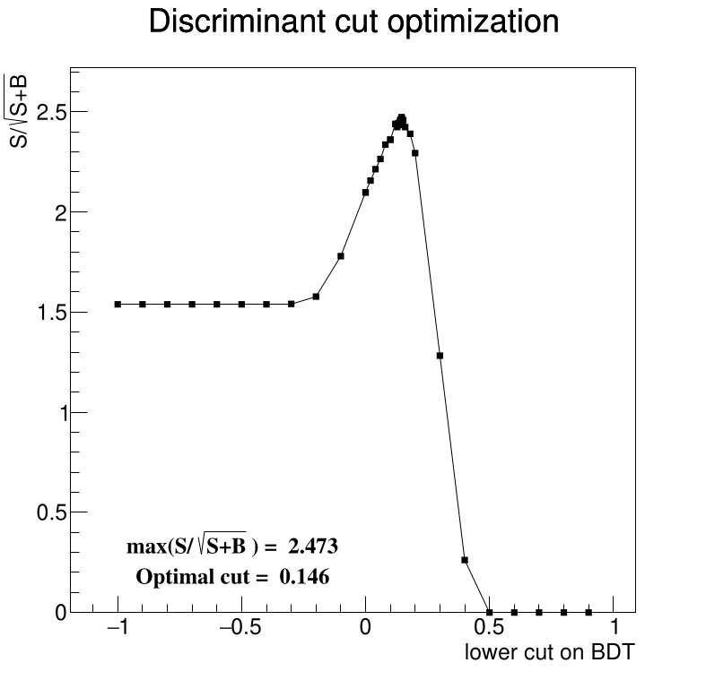
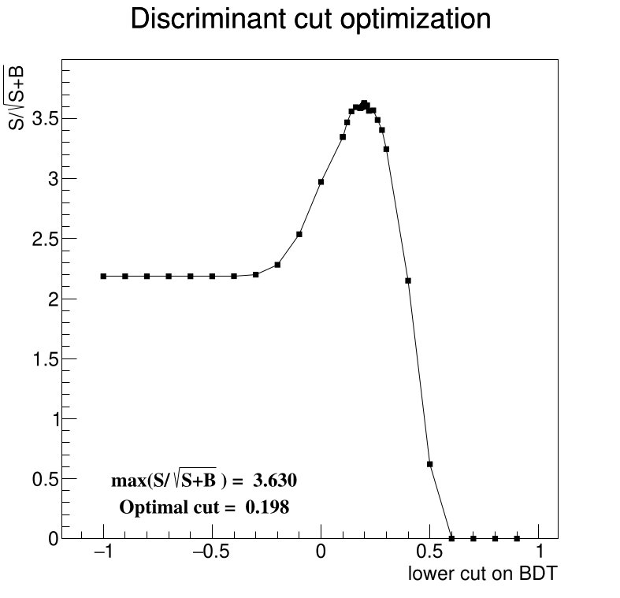
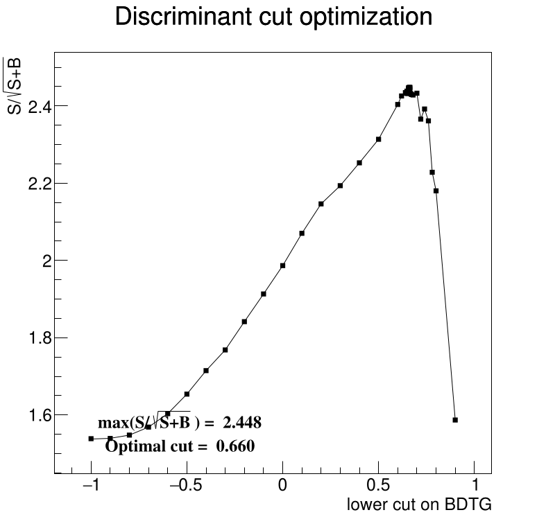
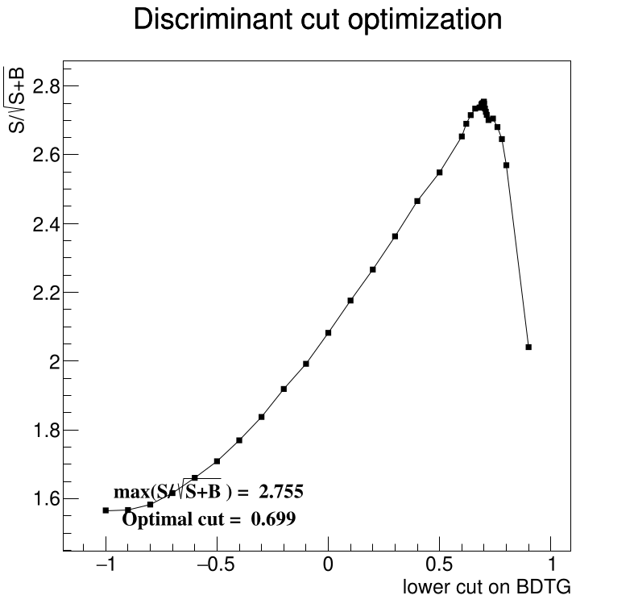
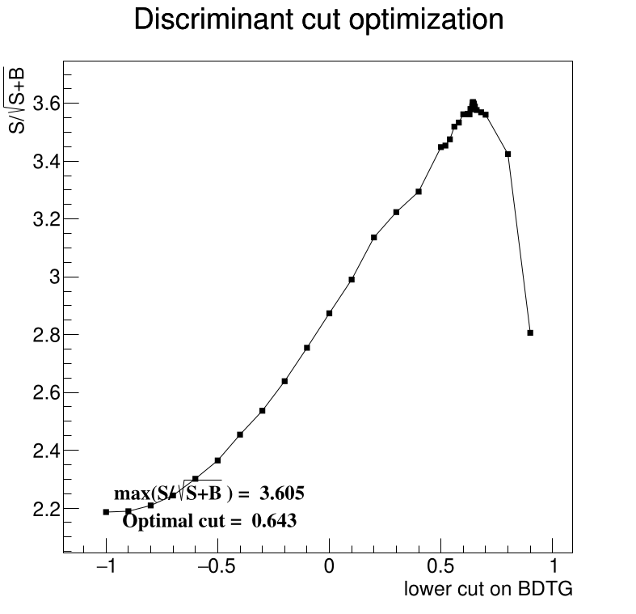

First thing to report is that I fixed the lepton cuts. I had an issue a few months back that when I tried to plot the muon channel there we no events. We put that issue on the back burner and I just happened to stumble across the fix (bad eta cuts). So all plots up until now have been in the electron channel. Now plots will have both the muon and electron, and I can plot them separately if I need to. This also means there are more events than in previous plots, but when just doing the electron cuts the numbers match again.
I redid the training to include the muon events, plotted the control regions, found the scale factors, and made the scaled signal region plots. Things match fairly close. I also included more variables in the training again since there's been so many other things that have changed, the rankings might have changed a bit too. I added a way to save the terminal output to a text file so I can more easily go back to get the variable rankings to compare them.
I also redid the optimal cut scan to find the best cut on the MVA responses and plotted the results. I'm not including MLPBFGS because the cut scan failed on that method. I might go back to using DNN_GPU, but there's a trade off; MLPBFGS gives a variable ranking but it might be more hassle than it's worth, DNN_GPU doesn't give a variable ranking, but the cut scan has worked in the past.





Combining the addition of the muon channel, the scale factors, and the optimal cut for BDT results in these plots
I spent a day cleaning up some of the plotting functionality and the makefile so I can more easily make plots with only changing the arguments to the make command. I also worked on the cutflow function to make it a little more flexible like the plotting functions. I noticed I'm slowly working backwards. A few months ago I was training on almost all data&MC, then I started training only in the SR, but to plot the CRs I had to let those events back into the training. Now to see the effects of all of the cuts I have to not preapply them before the training. So I'm only cutting out NaN's and everything outside of the wv_boosted region. I'm basically back to training on most data&MC.
I also had a weird issue where 2016 & 2018 trained fine, but 2017 gave issues. After the decorrelation step (before the actual training) somehow everything was getting set to 0. Then I took that step out and none of the years worked because the DNN_GPU couldn't use CUDA for some reason. I just install the CUDA enabled version of ROOT from the package manager and it worked fine, so I'll stick with that version until the next weird error.
I generated cut flow tables after training on the wider datasets (again, with the more strict preselection cuts the first 6 or so cuts in the flow had the same numbers because they were all preapplied). The function also creates a corresponding set of plots, linked below the tables.
I haven't had the time to run all of the trainings while varying the number of variables. I'm stuck wondering about the best trade off for the preselection cuts. More cuts for faster (with maybe better results?) training but lose information from the cut flows, or fewer cuts with slower training but know what the cuts are doing.
Not research, but I added horizontal scroll bars where it makes sense, and the view should auto adjust if you resize the window too small and things start to overlap. I'll be expecting my degree in web development in the mail soon.
Actual work: I fixed the S/sqrt(S+B) calculation and then promptly broke it again. It took a few hours to debug, but the math checks out now at least. Also, what was listed as the 95% CL was showing S/sqrt(B), I fixed that, but now I'm not sure about the number that's being calculated. I need to dig into the CalcCL95 function from the limit_calc folder. It has a parameter called ndata but _bkg->npass is being passed to it.